Jared is a middle-aged guy full of old-man wisdom. He's best described as a gentlemen scholar and a man among men. You can read his writing at his site: Legends of Men


A couple weeks ago I wrote an article about ways women make themselves more masculine. It occurred to me after I wrote that article that I missed one of the worst ways women make themselves more manly: ridiculous physical strength.
I’m not talking about healthy women. Women should have some strength. It is necessary for traditionally feminine roles (you’d be surprised how much strength you need to care for children). But so many women today are going well beyond the strength they need to be good at what they should do. When you consider also that being too strong makes women unattractive, it becomes obvious that all their strength-building is done for a sick sense of vanity. Or perhaps penis envy. You decide.
That’s not to say fit women aren’t attractive. On the contrary, fit women are the most attractive. The women I’m referring to take their workouts/athleticism/muscle-building/fat-burning to extreme levels. These images will demonstrate just how ugly women’s pursuits to be physically manly makes them.
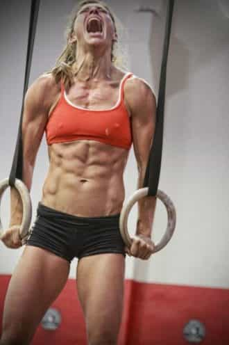
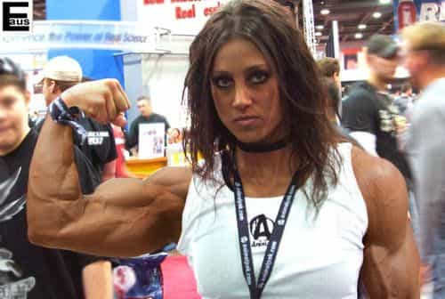
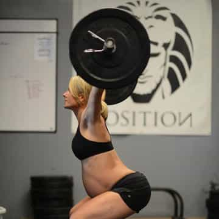
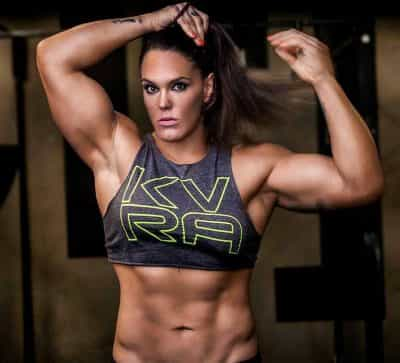
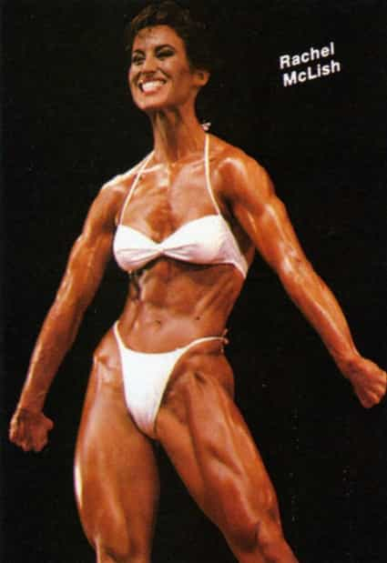
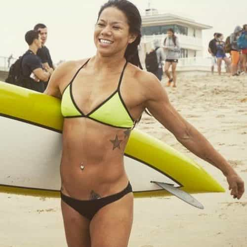
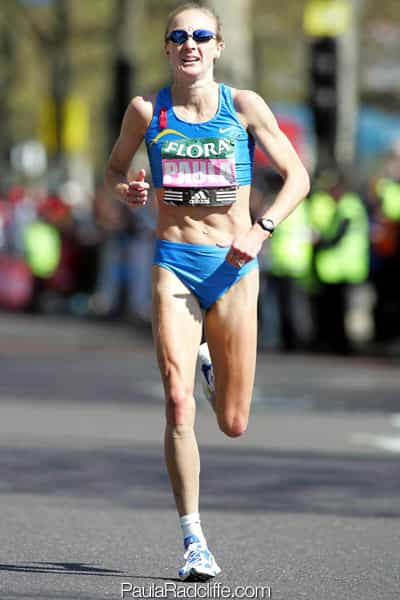
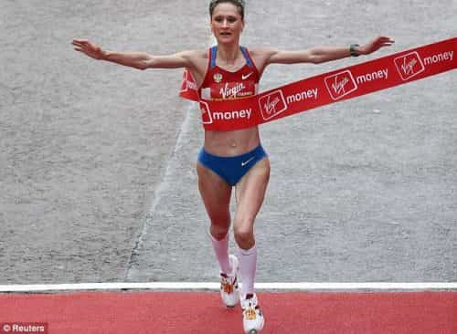
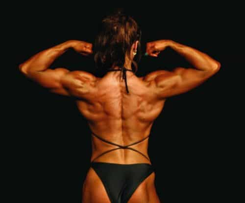
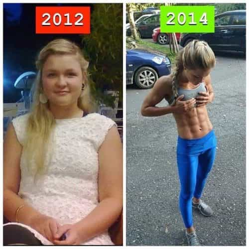
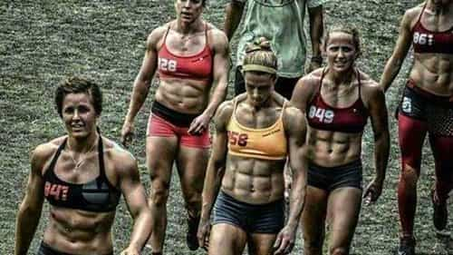
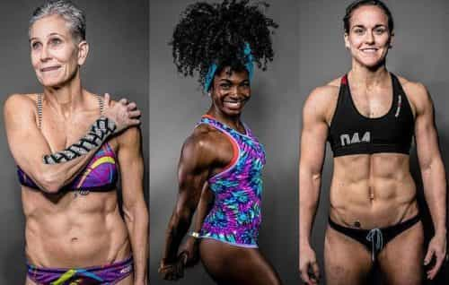
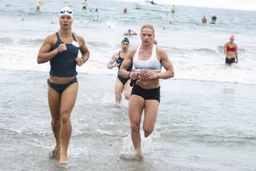
Again, fit women are the most beautiful. You don’t get a body like this without being fit:

But the women featured above took their fitness to obsessive, self-destructive levels. They wanted to be more like men, and unfortunately, they got what they asked for.
For more from Jared Trueheart on the roles of men and women in literature and film check out his writing at Legends of Men.
Read More: Images Of Attractive Women In Media Do Not Hurt Women